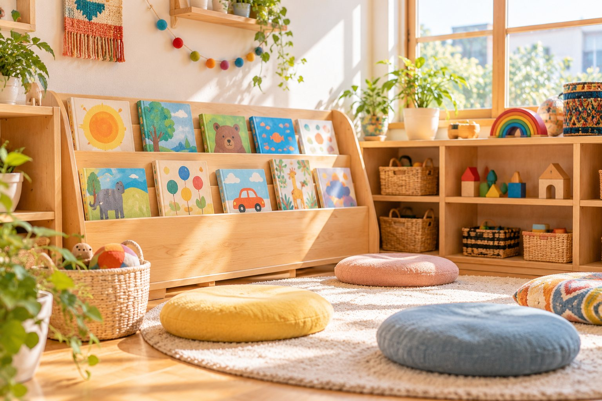

こどもの気持ちに寄り添う
一人ひとりの気持ちに目を向け、安心して過ごせる毎日をつくります。

一人ひとりの気持ちに目を向け、安心して過ごせる毎日をつくります。

先輩の関わりやチームの雰囲気から、保育の面白さや大切さを学びます。

さまざまな背景をもつこどもたちと関わり、多様な価値観にふれることができます。
実際の園を見て、先生たちの話を聞きながら、
働くイメージを具体的にしていきましょう。
園の環境やこどもたちの様子を、実際に見て感じられます。
日々の保育や行事など、先生たちから話を聞くことができます。
仕事のこと、働き方のことなど、気になることを気軽に相談できます。
育成の流れ・構成案
園の理念や日々の生活、こどもたちの姿を知ります。
先輩の姿を見ながら、少しずつ実践していきます。
経験を重ねながら、できることを広げていきます。
これまでを振り返り、次の目標を考えます。
募集条件は確認後に更新します。
| 募集職種 | 保育士（確認予定） |
|---|---|
| 応募資格 | 資格取得見込み・卒業年度を確認予定 |
| 雇用形態 | 確認予定 |
| 勤務地 | 岐阜県可児市／配属先は確認予定 |
| 勤務時間 | シフト・実働時間を確認予定 |
| 給与・賞与 | 確認予定 |
| 休日・休暇 | 確認予定 |
| 福利厚生 | 確認予定 |
| 採用予定人数 | 確認予定 |
最新の募集状況はお問い合わせください。
園の見学について、まずはお気軽にご相談ください。
応募の流れや必要書類について、ご案内します。
選考の方法や流れについて、確認後に詳しくお伝えします。
応募書類・選考手順は、確認後に詳しくご案内します。
はい。応募前の見学についても、お問い合わせページからお気軽にご相談ください。
このページの募集要項に、確認できた条件を順次掲載します。最新の募集状況はお問い合わせください。
応募書類と手順は、確認後にご案内します。まずは採用についてお問い合わせください。